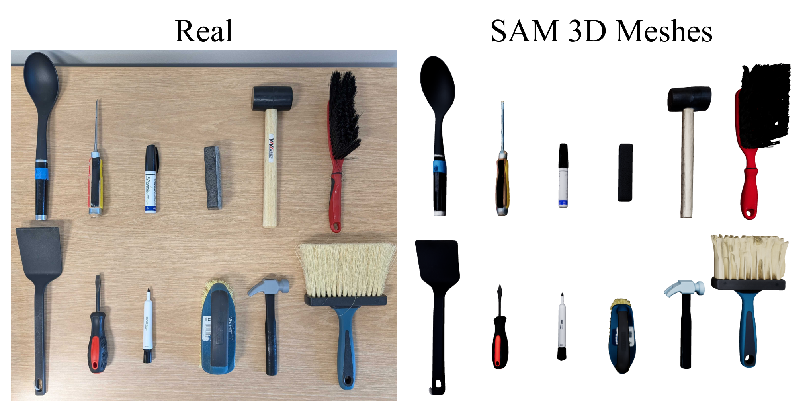
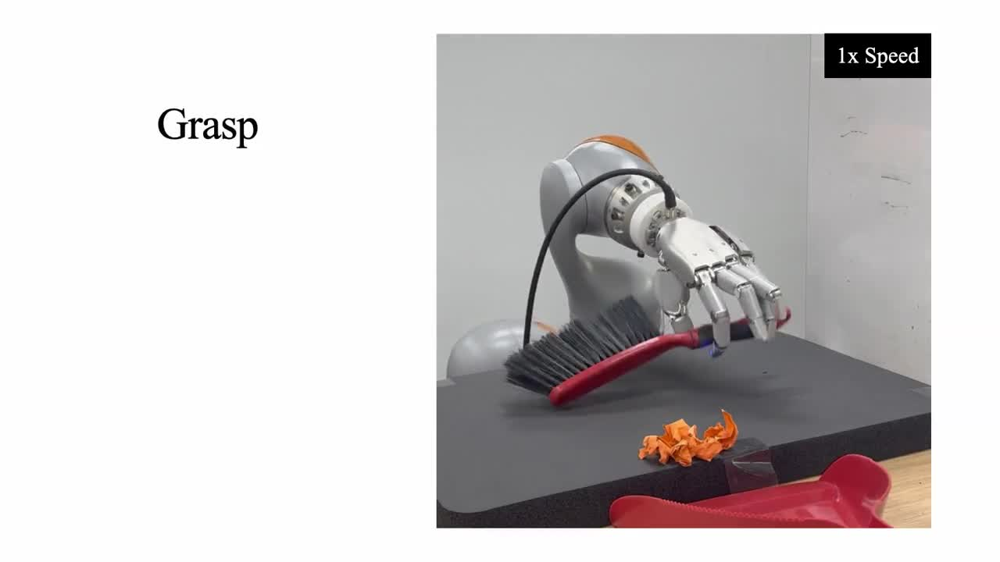
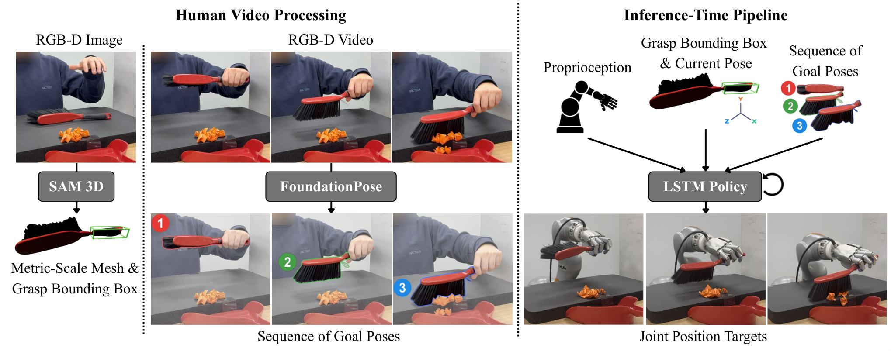
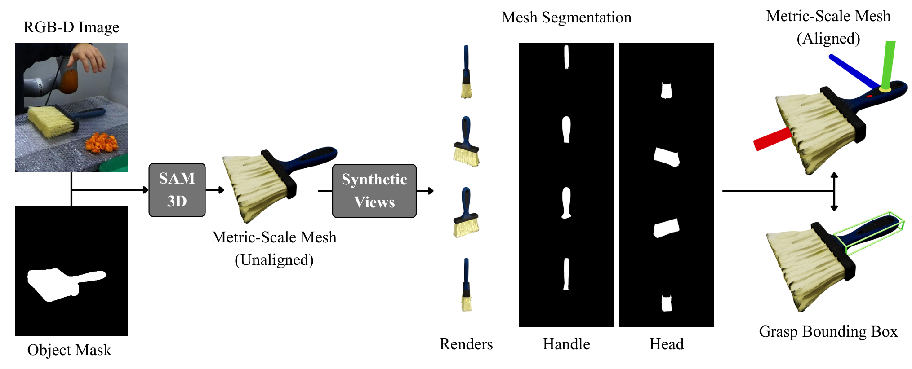
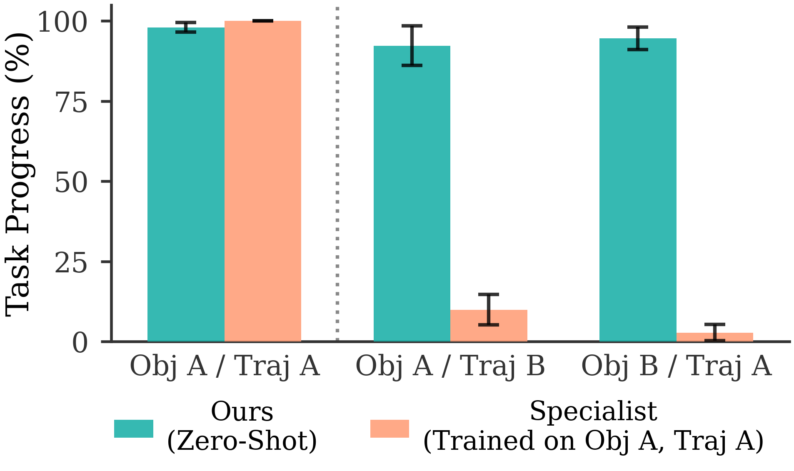
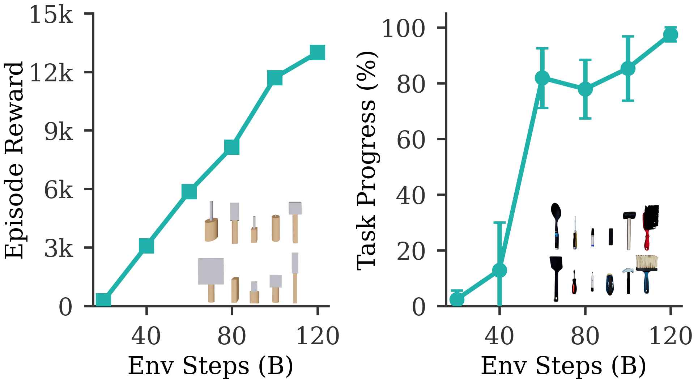
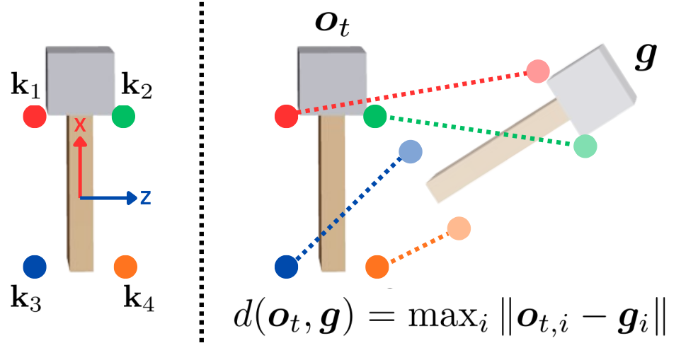

SimToolReal
Zero-Shot Dexterous Tool Manipulation
Can one reusable controller
turn tool motion into robot skill?
Jeannette Bohg · C. Karen Liu
Cornell University · Stanford University

Everyday tools demand dexterous control

The tool extends what the robot can do.
The hand must establish a grasp, change the tool orientation, and maintain contact.
Question: how should a robot acquire this capability?
Tool use combines several contact problems

Acquire: grasp a thin tool on a flat surface.
Reorient: move it within the fingers.
Interact: resist external forces without losing the tool.
How could a robot learn to use a new tool?
Would you collect more data,
build a task simulator,
or change what the policy learns?
Several routes place the burden in different places
| Route | What supplies the behavior? | Main burden for dexterous tools |
|---|---|---|
| Robot demonstrations / IL | Observed robot actions BC, diffusion or VLA policy | High-quality contact-rich data |
| Human video / retargeting | Human hand or object motion | Embodiment gap and physical contact |
| Planning + fixed grasp | Geometry and motion constraints | Feasibility under a rigid hand–tool relation |
| Task-specific sim-to-real RL | Physics, a task model and reward | Object modeling and per-task training |
Imitation learning needs the right action data
Robot action supervision
Teleoperation supplies examples of what this robot should do.
- Hand kinematics differ across embodiments.
- Limited force feedback makes dexterous contacts difficult to demonstrate.
Human video supervision
A person can demonstrate the desired tool motion naturally.
- Human finger motion need not transfer to robot fingers.
- Kinematic similarity does not guarantee a stable grasp.
Reinforcement learning shifts the engineering cost
Why simulate?
- Physics exposes contact consequences.
- Parallel trials explore grasp and reorientation strategies.
- No robot action demonstrations are required for policy training.
Why is reuse difficult?
- A new object may need a new simulation asset.
- A new task may need a new reward.
- A specialist can overfit to one trajectory.
The transferable interface is the tool motion
A 6D pose specifies position and orientation
A single policy repeatedly solves goal reaching
| Input | Meaning |
|---|---|
| sₜ | Robot proprioception |
| oₜ | Estimated current tool pose |
| φ | Coarse grasp-region bounding box |
| gᵏ | Current desired tool pose |
Common structure is a designed prior
Training varies objects and goals together
A shared reward induces the component skills
Approach and lift
Shaping helps the hand acquire the object from the table.
Reach a pose
Reward improvement in pose distance and give a success bonus.
Repeat
After success, sample another goal with the same reward.
Learning and transfer need more than object diversity
Learning in simulation
- SAPG improves exploration over the tested PPO setup.
- An asymmetric critic uses privileged simulator state.
- An LSTM actor handles partial observations.
Deploying in reality
- Randomize pose noise and sensing delays.
- Perturb the object with forces and torques.
- Match robot dynamics and smooth the joint targets.
Training on synthetic tools produces dexterous motion

The green mesh indicates the current target pose.
The policy learns to acquire and reorient procedurally generated tools.
There is no human task trajectory in this training loop.
Deployment adds perception and a human demonstration

Geometry extraction is semi-automated

The handle defines the grasp box and canonical frame. FoundationPose then tracks the tool.
Goal switching is event-driven
3 Hz describes demonstration downsampling, not the policy control frequency.
The closed loop follows unseen tool trajectories

The human demonstration supplies the tool-motion goals.
The fixed policy grasps, reorients and moves the real brush.
The goal interface specifies tool motion rather than robot finger trajectories.
What “zero-shot” means in this paper
| Absent at deployment | Still required at deployment |
|---|---|
| Policy training on the target tool | A metric-scale mesh for pose tracking |
| Policy training on the target task | An RGB-D human demonstration |
| Task-specific reward tuning | A grasp region and canonical frame |
| Real-world policy fine-tuning | Online object tracking and calibrated robot sensing |
DexToolBench evaluates trajectory progress
Transfer is strong but uneven across tools
Presenter aggregation of Table II: 79.3% mean Task Progress across 120 rollouts. Each category has 20 rollouts.
In-hand control matters in the brush comparison
Five rollouts per variation. Same red-brush task, two initial orientations. Values from Fig. 5.
Specialists are sensitive to changed tools and goals

- Match specialist performance on its training setup.
- Keep high progress when either the tool or the trajectory changes.
- All three conditions are evaluated in simulation.
The proxy objective predicts downstream progress

Evidence for the abstraction
Random-pose training improves alongside unseen tool-trajectory performance.
Perception is the largest recorded failure category
Recovery depends on retaining usable state feedback

The policy can attempt to regrasp after a manipulation error.
Recovery requires the object to remain reachable and trackable.
This is a qualitative behavior, not an evaluated universal recovery guarantee.
The pose interface leaves important state out
| Assumption or omission | Where it can fail |
|---|---|
| Rigid tool state | Scissors and articulated tools need internal joint state. |
| Environment-blind policy inputs | Clutter can make a pose path collide with the scene. |
| No explicit task-force objective | Correct tool motion may not deliver the required force. |
| Fixed high-level goal sequence | The system does not replan the task when the world changes. |
A complementary route beyond end-to-end action models
What this work establishes
A reusable motor policy can emerge from structured simulation and transfer to new tools without policy fine-tuning.
What remains open
Autonomous task discovery, scene understanding and reliable adaptation in unstructured environments.
This paper neither demonstrates online in-the-wild skill learning nor eliminates foundation models.
Other interactions may admit compact task interfaces
| Interaction family | Candidate task interface | Extra state likely needed |
|---|---|---|
| Rigid object transport / reorientation | Object poses in SE(3) | Obstacle and contact geometry |
| Doors, drawers and other mechanisms | Articulation state or constrained pose path | Joint constraints and contact mode |
| Insertion or forceful surface work | Pose plus contact / wrench targets | Force, compliance and environment state |
| Deformable-object manipulation | Shape or task-relevant keypoints | Deformation and contact history |
A lightweight VLM could improve the semantic interface
Three experiments would test these extensions
| Proposed change | Controlled comparison | Measure beyond Task Progress |
|---|---|---|
| VLM-assisted semantic setup | Manual point prompts vs. VLM region proposals | Human intervention count, grasp-region accuracy |
| Better closed-loop state estimation | Original tracker vs. multi-view / grounded hybrid | Pose error, latency, tracking-loss rate |
| Richer task interface | Pose-only vs. pose + contact / force + replanning | Functional completion, contact safety, transfer |
A reusable motor skill needs a well-chosen task interface
Specify motion at the object level
Human video supplies goals without prescribing robot finger motion.
Learn the controller over varied physics
Procedural primitives and random goals support policy reuse.
Preserve the boundary of the evidence
Strong trajectory transfer still leaves perception, force and replanning open.
Which parts of a manipulation task can we safely compress into a reusable goal interface?
Pose error couples translation and rotation

- Reward keypoints use fixed scales across objects.
- Observation keypoints depend on the object instance.
- Training tolerance: 1 cm. Evaluation: 2 cm.
Ablations identify important RL ingredients

- Replacing SAPG with PPO lowers training reward.
- Removing the asymmetric critic severely hinders learning.
- These curves cover 9B environment steps.
This ablation measures training reward, not real-world functional task completion.
Implementation details that matter for reproduction
| Component | Reported configuration |
|---|---|
| Robot | 7-DoF KUKA iiwa 14 + 22-DoF Sharpa left hand |
| Simulator / parallelism | IsaacGym / 24,576 environments |
| Simulation / control | 120 Hz / 60 Hz |
| Actor | LSTM[1024] + MLP[1024, 1024, 512, 512] |
| Critic | MLP[1024, 1024, 512, 512], privileged simulator state |
| Pose observations | 1 cm translation noise, 5° rotation noise, up to 10-step delay |
| Perturbations | 5 N force scale, 0.5 Nm torque scale |
Real-world task breakdown: Hammer, marker and eraser
| Tool / instance | Trajectory | Mean progress |
|---|---|---|
| Hammer / Claw | Swing down | 100.0% |
| Hammer / Claw | Swing side | 95.5% |
| Hammer / Mallet | Swing down | 84.4% |
| Hammer / Mallet | Swing side | 77.5% |
| Marker / Sharpie | Draw smile | 80.0% |
| Marker / Sharpie | Write C | 77.6% |
| Marker / Staples | Draw smile | 90.6% |
| Marker / Staples | Write C | 66.2% |
| Eraser / Handle | Wipe smile | 100.0% |
| Eraser / Handle | Wipe C | 100.0% |
| Eraser / Flat | Wipe smile | 100.0% |
| Eraser / Flat | Wipe C | 100.0% |
Real-world task breakdown: Brush, spatula and screwdriver
| Tool / instance | Trajectory | Mean progress |
|---|---|---|
| Brush / Blue | Sweep forward | 51.1% |
| Brush / Blue | Sweep right | 100.0% |
| Brush / Red | Sweep forward | 82.7% |
| Brush / Red | Sweep right | 61.4% |
| Spatula / Spoon | Serve plate | 85.0% |
| Spatula / Spoon | Flip over | 95.5% |
| Spatula / Flat | Serve plate | 77.5% |
| Spatula / Flat | Flip over | 46.1% |
| Screwdriver / Long | Spin vertical | 55.8% |
| Screwdriver / Long | Spin horizontal | 61.7% |
| Screwdriver / Short | Spin vertical | 37.9% |
| Screwdriver / Short | Spin horizontal | 75.6% |
References, videos and source material
Main paper
Kedia, Lum, Bohg and Liu. SimToolReal: An Object-Centric Policy for Zero-Shot Dexterous Tool Manipulation.
arxiv.org/abs/2602.16863v2 · RSS 2026 proceedings
Project and code
simtoolreal.github.io · github.com/tylerlum/simtoolreal
Closely related work
Chen et al. Object-Centric Dexterous Manipulation from Human Motion Data. CoRL 2024.
Lum et al. Crossing the Human-Robot Embodiment Gap with Sim-to-Real RL Using One Human Demonstration. 2025.
Petrenko et al. DexPBT. 2023.
Design reference
Mizoreww/steerable-vla-talk and the previous A2A seminar deck.